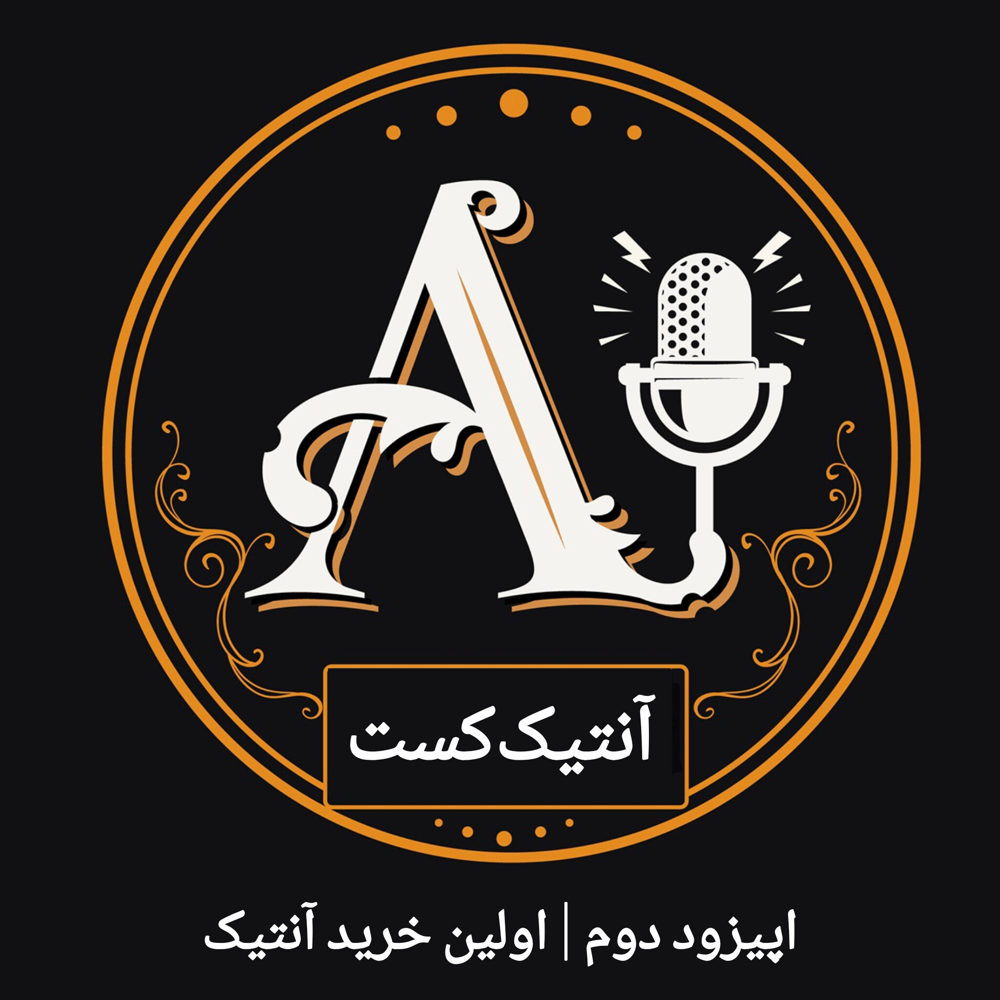

اولین خرید آنتیک
اولین خرید یک شیء آنتیک میتواند هیجانانگیز باشد، اما اگر ندانیم به چه چیزهایی باید توجه کنیم، همین خرید میتواند به یک تجربه پرهزینه تبدیل شود.

درباره این قسمت
وقتی برای اولین بار وارد دنیای آنتیک میشویم، با اشیای زیادی روبهرو میشویم؛ هر کدام با ظاهر، داستان و قیمتی متفاوت. اما از کجا باید شروع کرد؟
اولین خرید فقط انتخاب یک شیء نیست. شناخت فروشنده، بررسی وضعیت شیء، توجه به اصالت، قیمت و حتی دانستن اینکه چه چیزی را نباید خرید، بخش مهمی از این تجربه است.
در این قسمت میشنوید
قبل از اولین خرید به چه نکاتی توجه کنیم، چگونه یک شیء را بررسی کنیم، چه پرسشهایی از فروشنده بپرسیم و چگونه بدون عجله تصمیم بگیریم.